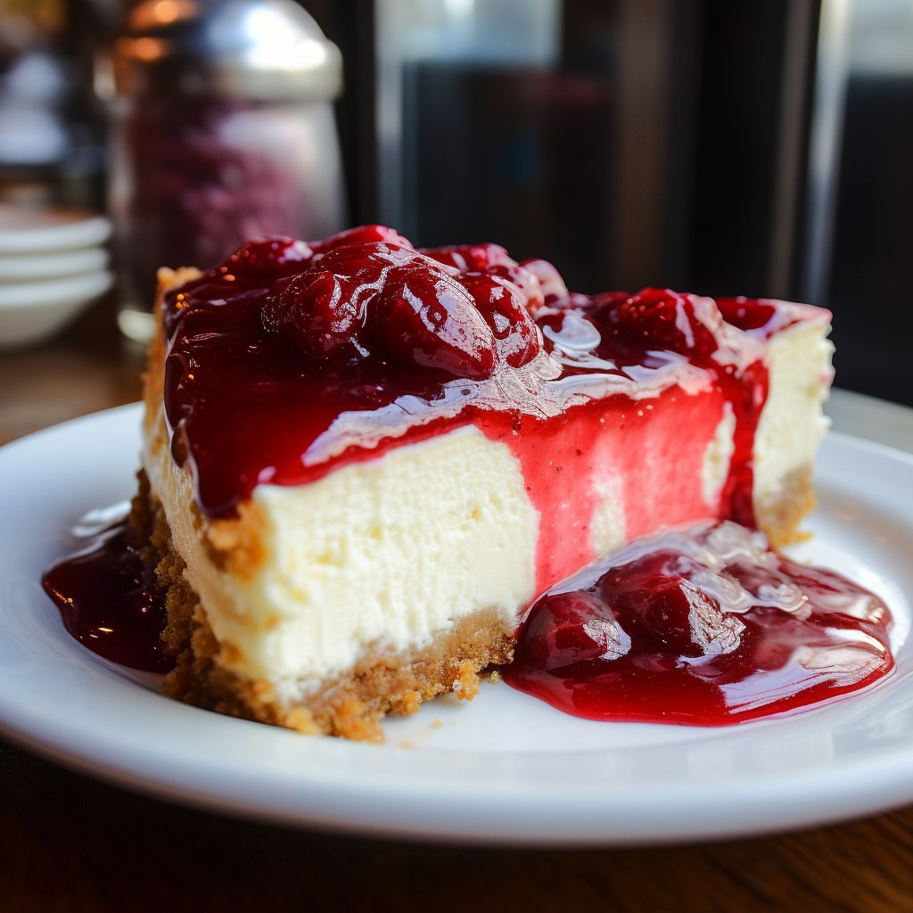

Cheesecake

Cheesecake is a delicious dessert made with a smooth, creamy filling that's typically made with cream cheese, eggs, and sugar. It's a versatile dessert that can be served year-round, and it's often popular for special occasions, such as birthdays and holidays.
Cheesecake originated in ancient Greece and was later adopted by the Romans, who used cheese as a filling for their cakes. The modern version of cheesecake that we know today is said to have come from New York City in the United States, where it became popular in the early 1900s.
Overall, cheesecake is a rich and indulgent dessert that's perfect for those with a sweet tooth. Whether you prefer it plain and classic or with a twist, cheesecake is sure to satisfy your cravings and leave you wanting more.
Ingredients
- 32 oz cream cheese² softened to room temperature (910g)
- 1 cup sugar (200g)
- ⅔ cups sour cream (160g)
- 1 ½ teaspoons vanilla extract
- ⅛ teaspoon salt
- 4 large eggs room temperature, lightly beaten
Instructions
- Preheat oven to 325F (160C).
- Prepare Graham Cracker crust first by combining graham cracker crumbs, sugar, and brown sugar, and stirring well. Add melted butter and use a fork to combine ingredients well.
- Pour crumbs into a 9” Springform pan and press firmly into the bottom and up the sides of your pan. Set aside.
How to make it
- In the bowl of a stand mixer or in a large bowl (using a hand mixer) add cream cheese and stir until smooth and creamy (don’t over-beat or you’ll incorporate too much air).
- Add sugar and stir again until creamy.
- Add sour cream, vanilla extract, and salt, and stir until well-combined. If using a stand mixer, make sure you pause periodically to scrape the sides and bottom of the bowl with a spatula so that all ingredients are evenly incorporated.
- With mixer on low speed, gradually add lightly beaten eggs, one at a time, stirring just until each egg is just incorporated. Once all eggs have been added, use a spatula to scrape the sides and bottom of the bowl again and make sure all ingredients are well combined.
- Pour cheesecake batter into prepared springform pan. To insure against leaks, place pan on a cookie sheet that’s been lined with foil.
- Transfer to the center rack of your oven and bake on 325F (160C) for about 75 minutes. Edges will likely have slightly puffed and may have just begun to turn a light golden brown and the center should spring back to the touch but will still be Jello-jiggly. Don't over-bake or the texture will suffer, which means we all suffer.
- Remove from oven and allow to cool on top of the oven³ for 10 minutes. Once 10 minutes has passed, use a knife to gently loosen the crust from the inside of the springform pan (this will help prevent cracks as your cheesecake cools and shrinks). Do not remove the ring of the springform pan.
- Allow cheesecake to cool another 1-2 hours or until near room temperature before transferring to refrigerator and allowing to cool overnight or at least 6 hours. I remove the ring of the springform pan just before serving then return it to the pan to store. Enjoy!